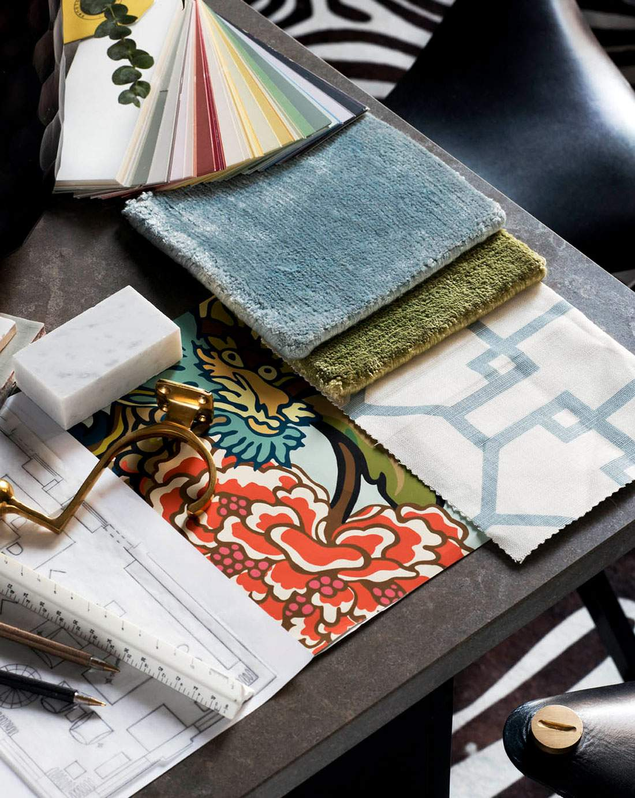
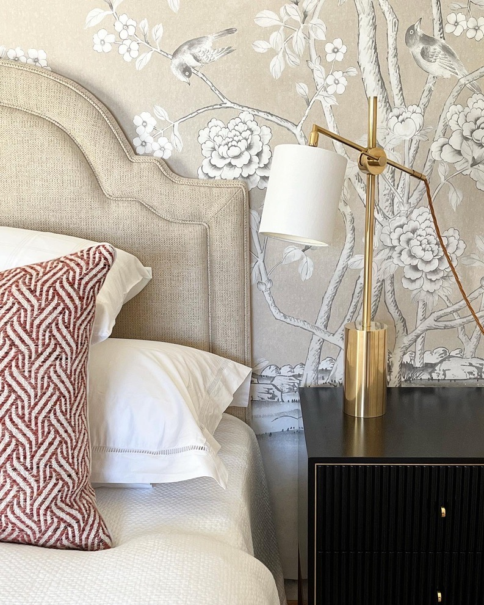
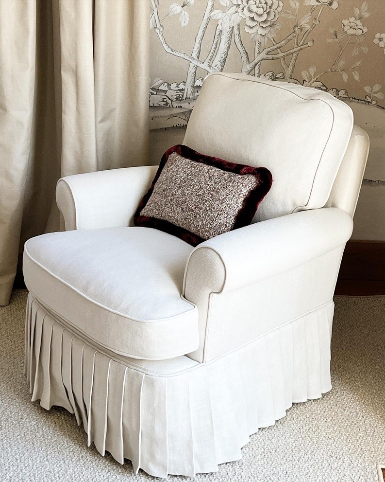

Interior design services
We are a boutique interior design firm specializing in residential interiors with long-lasting style and exceptional attention to detail. Our comprehensive services include selecting the perfect color palette, textiles and carpets, and finding the best furniture and lighting to fit your space.
We also offer space planning, complete material selections as well as project management to guide you through the process from start to finish.
During our many years in business we have developed great relationships with architects and builders with whom we collaborate on each project, giving our clients a full service design team to plan and design your home.
Contact us today to schedule an appointment!
How we work
 01
01Brief and planning
We start by getting to know you, your home and how you want to live in it. From there we plan the space and set the direction for the whole project.

02Materials, colours and textiles
We put together complete material selections – the colour palette, textiles and carpets, furniture and lighting – so every room works as a whole.

03Project management and final decoration
Together with the architects and builders we work with, we guide the project from start to finish, all the way to the final decoration.